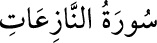

79- en-NÂZİÂT SÛRESİ
Nebe’ sûresinden sonra Mekke’de inmiştir; 46 âyettir. Adını, «söküp çıkaranlar»
yahut «çekip çıkaranlar» mânâsına gelen «nâziât» kelimesinden alır. Ana fikir
olarak kıyameti konu edinir.
Cenab-ı Allah, sûrenin başında, kendilerini, ilk beş âyette belirtilen güç ve
melekelerle donattığı varlıklara yemin etmektedir.